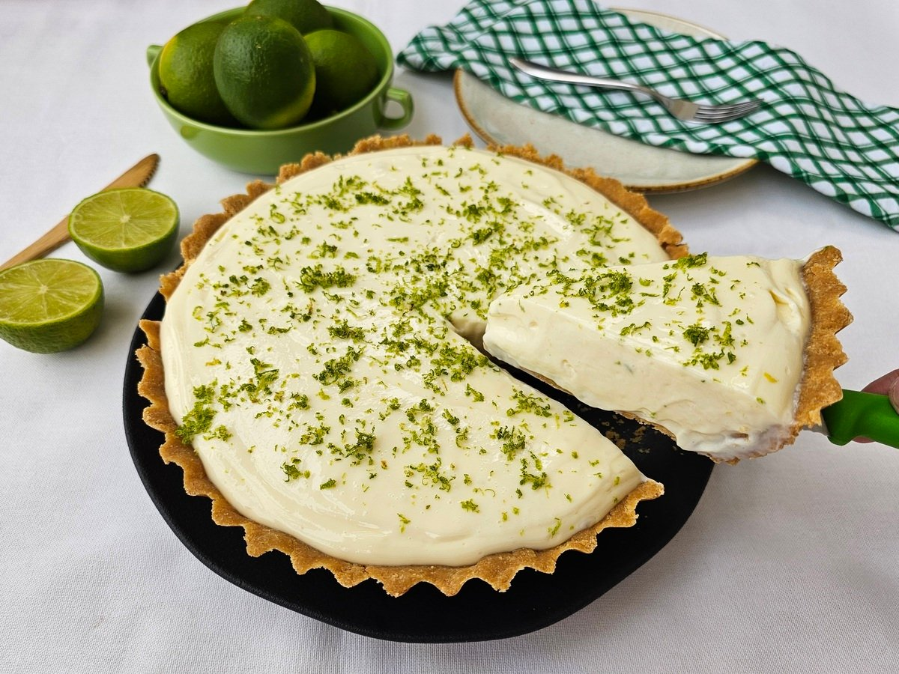

Confira essa receita de torta de limão com biscoito, uma sobremesa tradicional, queridinha dos brasileiros e perfeita pra todas as horas! Ela é simples, sua massa é feita com biscoito maizena e o limão dá um sabor bem especial.

Tempo de preparo: 30min
Tempo de espera: 50min
Porções: 10 fatias
Ingredientes:
Massa:
200g de biscoito maizena;
150g de margarina.
Recheio:
1 lata de leite condensado (395g);
1 caixa de creme de leite (200g);
Suco de 4 limões;
Raspas de 2 limões.
Suspiro (cobertura):
3 ou 4 claras de ovo;
3 colheres (sopa) de açúcar;
Raspas de 2 limões para decorar.
Modo de preparo:
Massa:
Triture o biscoito de maizena em um triturador ou liquidificador;
Junte a margarina e bata mais um pouco
Espalhe os biscoitos triturados no fundo e nas laterais da forma, cobrindo toda área de maneira uniforme.
Leve ao forno médio (180° C), preaquecido, por aproximadamente 10 minutos.
Recheio:
Bata todos os ingredientes no liquidificador (exceto as raspas de limão) até obter um creme liso e firme.
Recheie a massa já assada e leve à geladeira por 30 minutos.
Suspiro (cobertura):
Bata as claras em neve e acrescente o açúcar.
Misture até obter um ponto de suspiro e leve ao forno até dourar.
Desenforme a torta (sem retirar o fundo falso), despeje a cobertura e acrescente as raspas de limão.